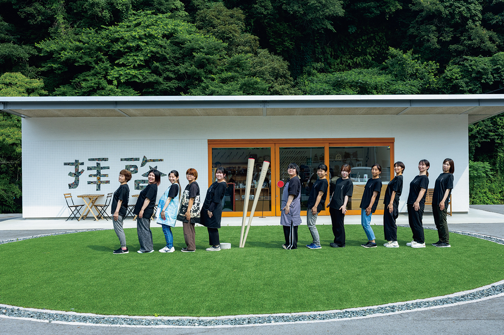
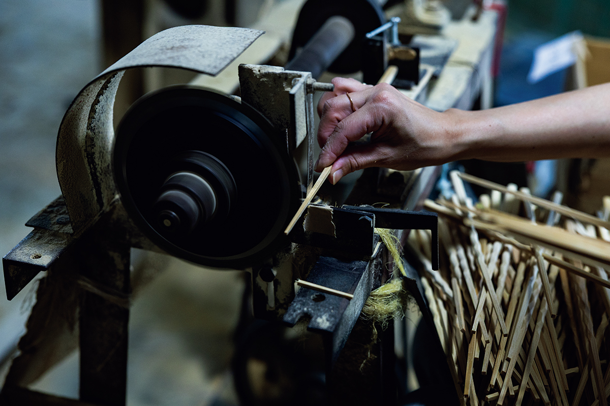
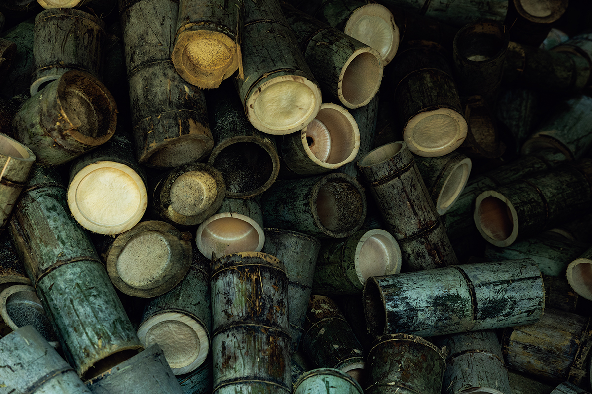
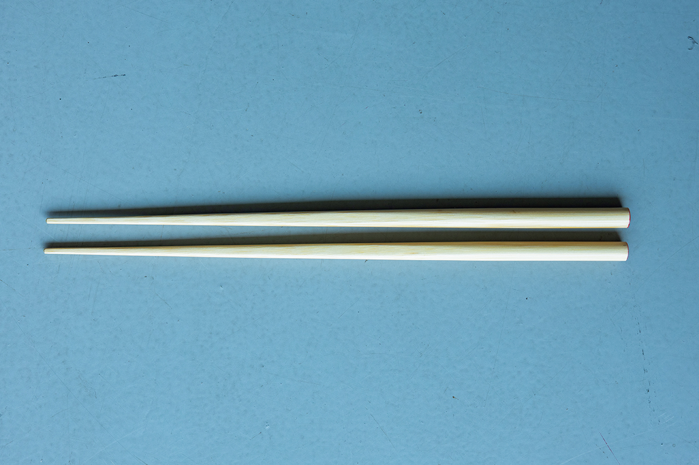
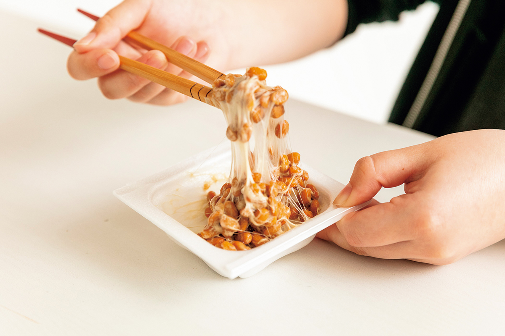
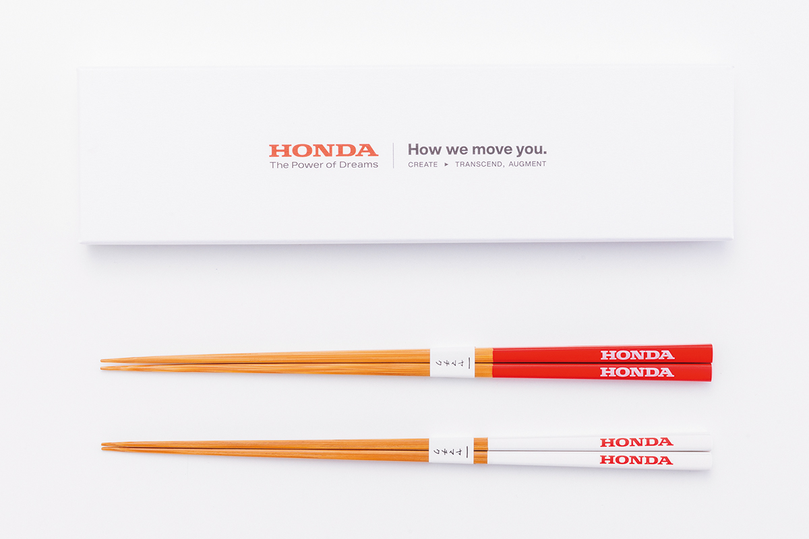
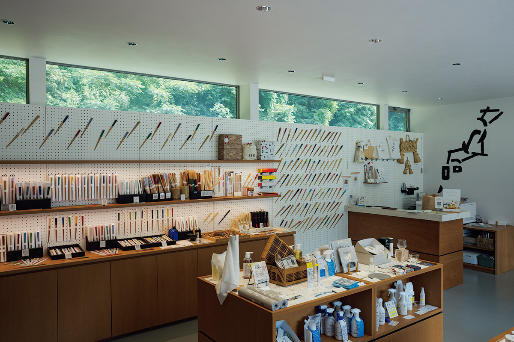
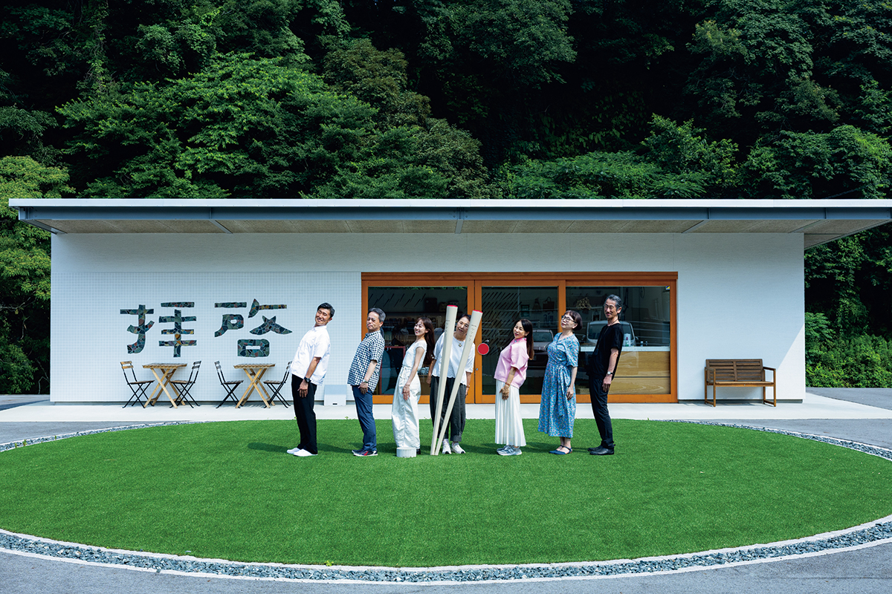

Префектура Кумамото · Нанкан · ремесло
Yamachiku в Нанкане: палочки из местного бамбука и магазин с кафе при фабрике

В маленьком городке Нанкан на севере префектуры Кумамото больше шестидесяти лет делают палочки для еды из японского бамбука. Рядом с фабрикой Yamachiku открыт магазин, где можно выбрать палочки из трёхсот с лишним видов и тут же попробовать их в кафе.
Фабрика
Палочки от стебля до кончика
Нанкан лежит на севере префектуры Кумамото, у границы с Фукуокой, и жителей здесь меньше десяти тысяч. Компания Yamachiku появилась здесь больше шестидесяти лет назад и с тех пор не уезжала. Каждый год она выпускает около пяти миллионов пар бамбуковых палочек, и они расходятся по столам в семнадцати странах. Их продают в магазинах дизайнерских вещей по всей Японии, ими пользуются рестораны со звёздами Michelin, известные рёканы и отели.

Многие палочки в Японии на самом деле делают из привозного сырья. Yamachiku единственная в стране фабрика, которая проводит весь путь сама, от заготовки японского бамбука до готового изделия. Материалом служит местный бамбук мосо, крупнейший из японских бамбуков. Девиз компании звучит так: «Беречь палочки, связывать сердца». За ним стоит простая мысль: палочки для еды это часть японской культуры, и делать их стоит из своего бамбука и своими руками.

Поворот
Свой бренд вместо чужих этикеток
Без людей, которые срезают бамбук в горах, не было бы и палочек. А платили им долго очень мало, около 500 иен за стебель. Если такая работа никого не кормит, бамбуковые рощи зарастают и горы приходят в запустение. Сама фабрика при этом жила в основном заказами крупных торговых сетей и чужих брендов: своё имя на палочках не ставили, а цену назначали заказчики.
Изменить это взялся Сёго Ямасаки, глава компании в третьем поколении. Он запустил первую собственную марку Yamachiku под названием okaeri, по-японски «с возвращением». Название обыгрывает фразу «бамбуковые палочки, с возвращением домой».

Простые палочки для всей семьи получили несколько зарубежных премий по дизайну, среди них New York ADC. О марке узнали за границей, появились новые партнёры, начался экспорт. Но главное, по словам компании, произошло внутри: мастера стали гордиться своей работой. Теперь на фабрике каждый год проходит внутренний конкурс идей, и из него вышли весёлые вещи вроде палочек для размешивания натто или палочек, которыми удобно придерживать крышку стакана с лапшой быстрого приготовления.


Цикл
Бамбук, мастера и покупатели
За шесть лет доля собственной марки в продажах превысила 70 %, и прибыль заметно выросла. Сотрудников стало 37 вместо 14. Бамбук компания теперь покупает вдвое дороже, чем десять лет назад, и среди резчиков постепенно появляется молодёжь.
Схема у Yamachiku простая. Компания рассказывает, как и из чего делают палочки, и продаёт их по честной цене. Доход возвращается в округу: резчики получают достойную плату, у людей есть работа, а за бамбуковыми рощами снова ухаживают. В 2025 году эта работа принесла Yamachiku золотую награду премии компании JR Kyushu за развитие туризма на Кюсю в категории ремёсел.
Магазин
«Хайкэй»: выбрать палочки и сразу опробовать
В 2023 году рядом с фабрикой открылся фирменный магазин «Хайкэй». Так в Японии начинают письмо, примерно как «Уважаемый…». Компания хочет, чтобы в Нанкан приезжали люди и городок стал местом, куда стоит заглянуть по дороге.

Это белое здание с крупной надписью на фасаде, у входа газон и столики. Внутри палочки на любой вкус, от повседневных до ограниченных серий, которых не найти в других магазинах. При магазине работает кафе: палочки, которые приглянулись на полке, можно взять в руки за едой и понять, удобны ли они именно вам.

Фабричный магазин «Хайкэй» (Yamachiku)
- Адрес
- префектура Кумамото, уезд Тамана, Нанкан, Хисасигэ, 14
- Телефон
- +81 968-82-8818
- Часы работы
- 10:00–16:00 (последний заказ в кафе 15:30)
- Выходные
- среда и четверг
- Сайт
- hashi.co.jp
Фото: Хиромаса Оцука.